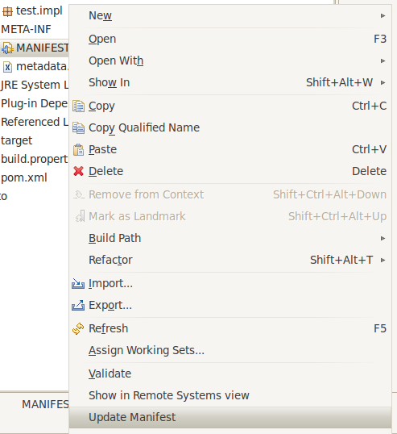
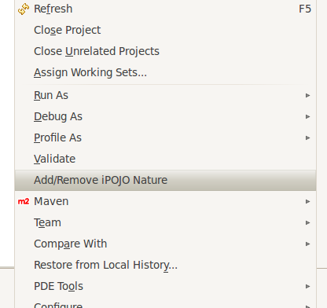
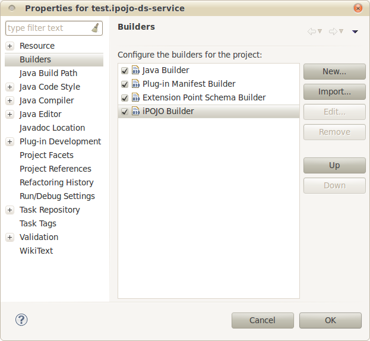

The builder can be run in standalone-like mode : just right-click on the Manifest file and click on Update Manifest. It is a one-shot pojoization. 
To add or remove the iPOJO nature on a Java project, right-click on the project and select Add/Remove iPOJO Nature. 
To know if a project has this nature, look at its properties and look for the iPOJO Builder in the builders panel. 
The builder is called when one of the next things happens :
The builder is not called when Manifest file is modified.